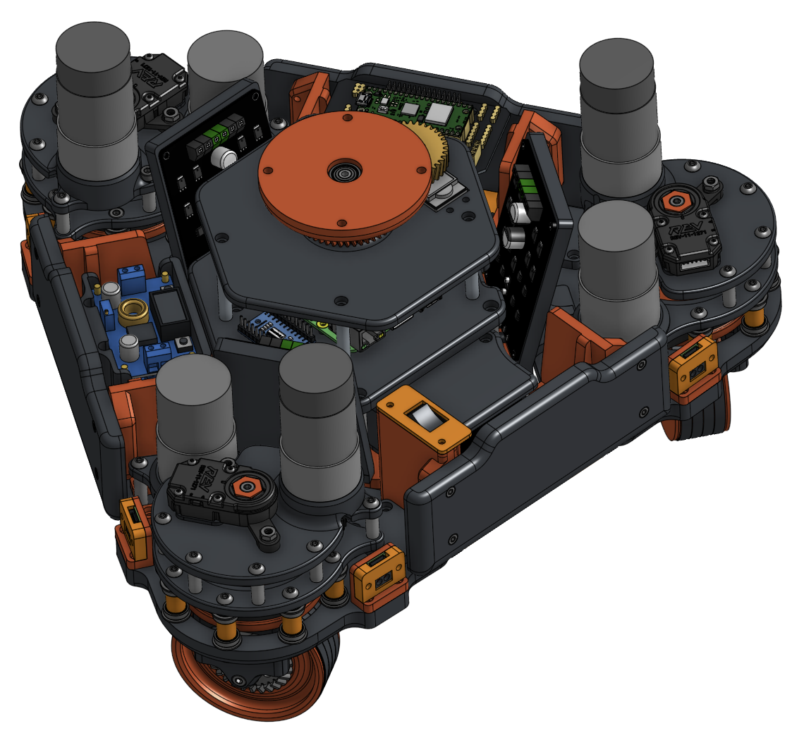
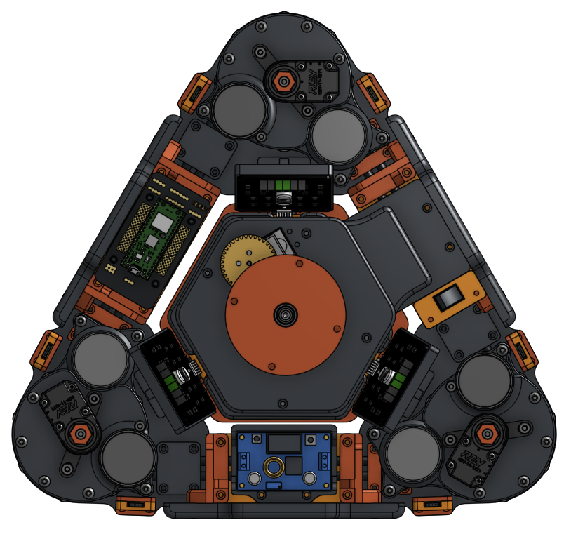

2026 · Drivetrain
3-wheel offset coaxial swerve drivetrain
A modular swerve system built around concentric steering and drive shafts, leaving the attachment plate clear for interchangeable payloads.

Build overview
The main constraint was keeping the mechanism compact without giving up a clean, swappable interface for attachments. The offset pod lets the steering and drive systems share the same centerline while the payload structure remains accessible.
This is where you can add testing results, iteration notes, match footage, or a link to the CAD files.
Gallery



Design notes
Components and architecture
Add the motors, bearings, encoders, fasteners, electronics, and interfaces used here. Explain what each component does in the system.
Design decisions
Explain why you chose the coaxial layout, the offset geometry, and the attachment interface. Include alternatives you considered and what tradeoffs decided the final design.
Testing and next iteration
Add measured results, failure points, and the next change you would make after testing.